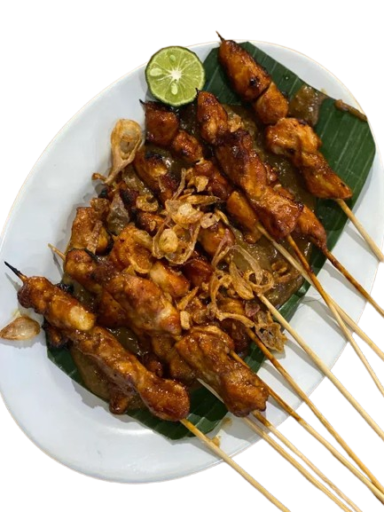
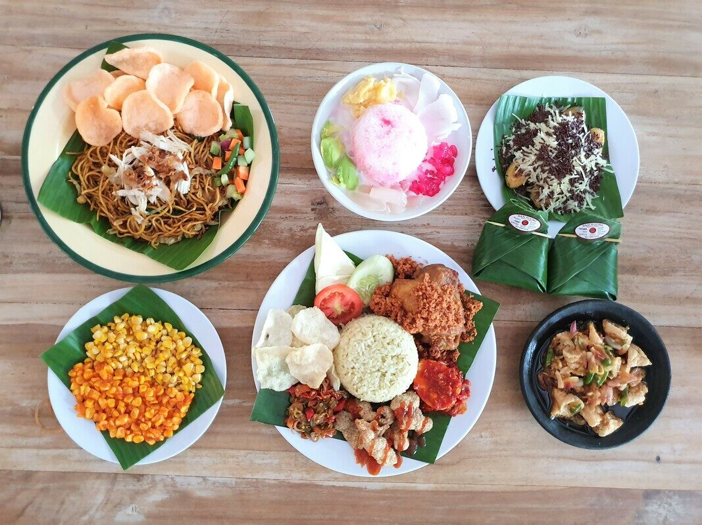
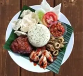
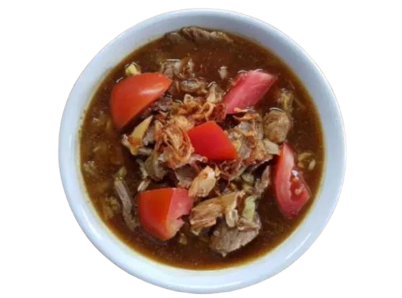

Hubungi Kami
Sate Kambing
Pilihan daging paha kambing terbaik, disate dan disajikan dengan cabe rawit, tomat, bawang merah, dan kecap manis.
Menu Lengkap
Otentik, lezat, dan variatif, pilih menu favoritmu, lalu pesan dari cabang terdekat.
Menu Andalan


Menu soto Betawi paling enak versi kami, kuah kental rempah dengan oseng daging pilihan.

Ayam bakar Diana, tumis kacang panjang tempe, emping, disajikan dengan nasi jeruk khas gerobakan.
Ayam, teri, peda, gabus, cumi, kerang, jamur, tujuh rasa nasi kucing pedas dibungkus daun pisang.
Semua menu andalan tersedia di 6 cabang kami.


Pilihan daging paha kambing terbaik, disate dan disajikan dengan cabe rawit, tomat, bawang merah, dan kecap manis.

Daging kambing pilihan disajikan dengan kol, tomat, cabe merah, dan kuah tongseng spesial racikan Gerobak Betawi.

Daging kambing pilihan disajikan dengan nasi goreng gerobak, acar segar, dan emping renyah.